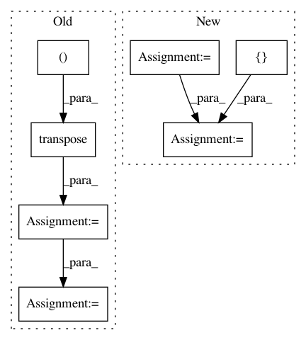

aba65f959fb114e67103a061e92ab5596c557d3d,geomstats/lie_group.py,LieGroup,group_exp,#LieGroup#Any#Any#Any#,90
Before Change
tangent_vec = gs.to_ndarray(tangent_vec, to_ndim=2)
inv_jacobian = gs.linalg.inv(jacobian)
tangent_vec_at_id = gs.einsum("ij,ijk->ik",
tangent_vec,
gs.transpose(inv_jacobian,
axes=(0, 2, 1)))
group_exp_from_identity = self.group_exp_from_identity(
tangent_vec=tangent_vec_at_id,
point_type=point_type)
group_exp = self.compose(base_point,
group_exp_from_identity,
point_type=point_type)
group_exp = self.regularize(group_exp, point_type=point_type)
return group_exp
elif point_type == "matrix":
tangent_vec = gs.to_ndarray(tangent_vec, to_ndim=3)
After Change
base_point = self.regularize(base_point, point_type=point_type)
n_tangent_vecs = tangent_vec.shape[0]
n_base_points = base_point.shape[0]
assert (tangent_vec.shape == base_point.shape
or n_tangent_vecs == 1
or n_base_points == 1)
if n_tangent_vecs == 1:
tangent_vec = gs.array([tangent_vec[0]] * n_base_points)
if n_base_points == 1:
base_point = gs.array([base_point[0]] * n_tangent_vecs)
In pattern: SUPERPATTERN
Frequency: 3
Non-data size: 7
Instances
Project Name: geomstats/geomstats
Commit Name: aba65f959fb114e67103a061e92ab5596c557d3d
Time: 2018-12-27
Author: ninamio78@gmail.com
File Name: geomstats/lie_group.py
Class Name: LieGroup
Method Name: group_exp
Project Name: interactiveaudiolab/nussl
Commit Name: b82419f321b3b52841065e00d1f50945d7e8a2ee
Time: 2020-03-16
Author: prem@u.northwestern.edu
File Name: nussl/separation/primitive/hpss.py
Class Name: HPSS
Method Name: run
Project Name: broadinstitute/keras-rcnn
Commit Name: df93c4e61e7ca1db25f1ee346ac0516685498b02
Time: 2017-08-15
Author: allen.goodman@icloud.com
File Name: keras_rcnn/backend/tensorflow_backend.py
Class Name:
Method Name: shift